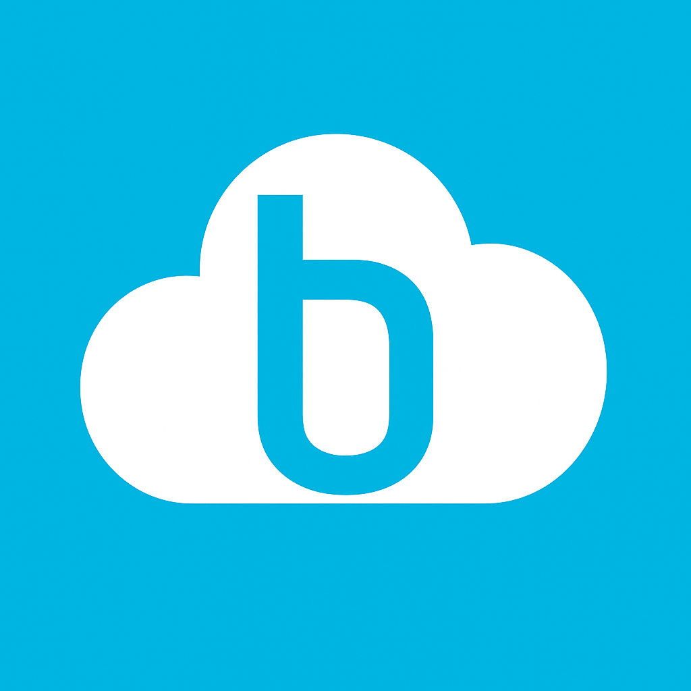

<div color="primary" class="navbar flex flex-row justify-between items-center mx-6 pt-6 mb-2">
    <div class="flex items-center justify-center gap-2 text-2xl">
      <div class="size-12"></div>
      <div><span class="font-bold">Bosenet</span><span>ONE v1.0.30</span></div>
    </div>
    <div class="flex justify-start items-center">
      <div class="profile-picture">
        
        <ng-template #defaultIcon>
          <mat-icon
            aria-hidden="false"
            aria-label="No profile photo"
            fontIcon="account_circle"
            class="account no-profile"
          >
            account_circle
          </mat-icon>
        </ng-template>
      </div>
        <div *ngIf="userName" class="text-primary font-semibold tracking-widest mr-4">{{userName}}</div>
          <span class="col-sm-2 log-out cursor-pointer material-symbols-outlined" (click)="logout()" matTooltip="Log Out">
            logout
          </span>
    </div>
</div>

<mat-tab-group mat-stretch-tabs="false" mat-align-tabs="end" [(selectedIndex)]="selectedTabIndex" (selectedTabChange)="onTabChange($event)">
    <mat-tab label="Projects"></mat-tab>
    <mat-tab label="Clients"></mat-tab>
    <mat-tab label="Consultants"></mat-tab>
    <mat-tab label="Templates"></mat-tab>
    <mat-tab label="Timesheets"></mat-tab>
    <mat-tab label="Holidays"></mat-tab>
</mat-tab-group>
